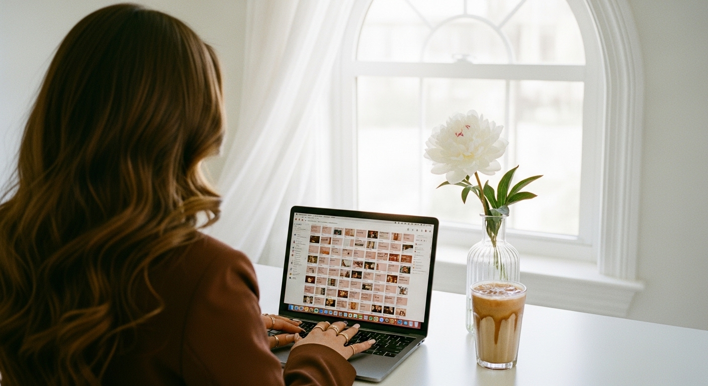
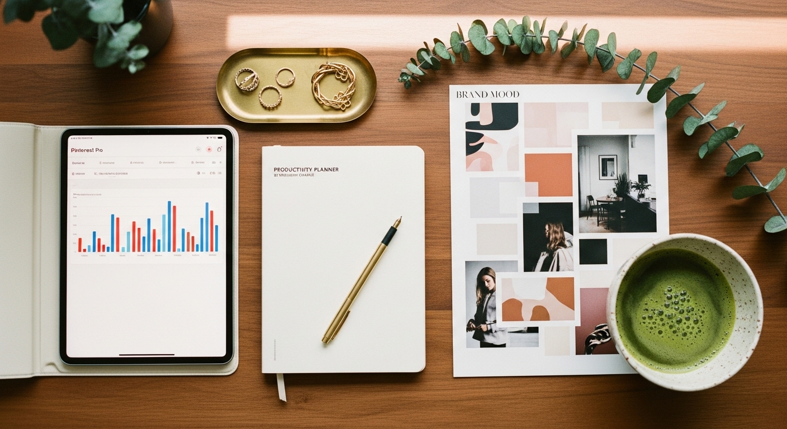
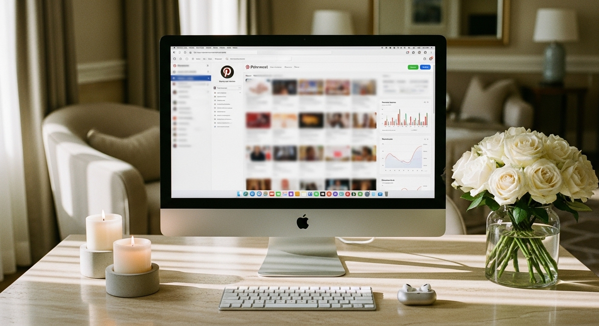
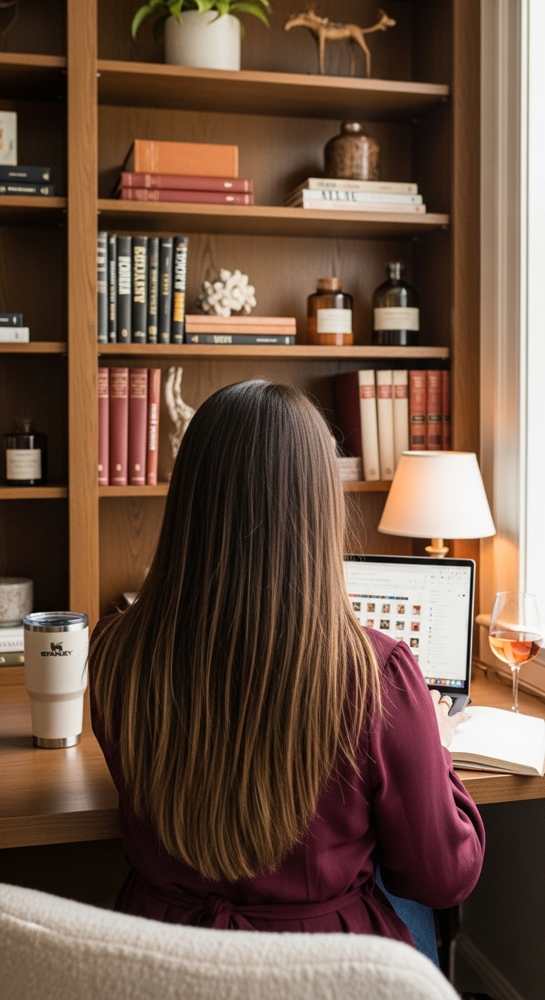

pinterest for small business




PINTEREST FOR SMALL BUSINESS: HOW TO GET TRAFFIC THAT WORKS FOR MONTHS
Pinterest for small business works because it functions as a search engine, not a social media platform. While your Instagram post disappears from feeds within 48 hours, a single Pinterest pin can drive traffic to your website for four months or longer. For coaches, service providers, and digital product sellers, this means the content you create today keeps working while you sleep, take weekends off, and focus on actually running your business.
Most small business owners hear "add another platform" and immediately think of more content to create, more engagement to manage, more time they don't have. Pinterest is different. You're not building an audience that needs constant entertainment. You're creating searchable content that people find when they're actively looking for what you sell.
Already exhausted from showing up on Instagram every day?
That's exactly why Pinterest makes sense. The work is front-loaded. You set up your account properly, create pins with the right keywords, and then the platform does the distribution for you. No dancing. No trending audio. No watching your reach tank because you missed a day.
With 537 million monthly active users as of Q1 2026 and 7.8% year-over-year growth, Pinterest is not a declining platform people forgot about. It's actively growing - and the users showing up are there to plan purchases, not scroll mindlessly.
WHY PINTEREST IS BUILT FOR SMALL BUSINESS OWNERS
The fundamental difference between Pinterest and every other platform is intent. Someone scrolling Instagram might be bored, procrastinating, or killing time in a waiting room. Someone searching Pinterest is looking for something specific.
They're searching "morning routine for busy entrepreneurs" because they want to fix their mornings. They're searching "branding kit for life coach" because they're ready to invest in their business.
This purchase intent changes everything about how you approach the platform. You're not trying to entertain people into eventually noticing you have something to sell. You're showing up exactly when they're looking for what you offer.
For small business owners without a marketing team, this is critical. You don't need a large existing audience to get reach. A brand-new Pinterest account with properly optimized pins can outperform established accounts because the algorithm serves content based on search relevance, not follower count.
Business accounts on Pinterest grew 38% worldwide in 2025 - the strongest growth since Pinterest for Business launched. Your competitors are already there. The window to establish authority in your niche is narrowing.
Here's what makes this especially powerful for service-based businesses: Pinterest users plan ahead. They search for solutions two to three months before they need them. Someone searching "how to price coaching packages" in March is likely launching their coaching business in May or June. If your content shows up during their research phase, you're positioned as the expert before they even know they need one.
If you're already creating content for your business - blog posts, freebies, podcast episodes - you have everything you need. Pinterest becomes the distribution channel that actually works.
HOW TO SET UP YOUR PINTEREST BUSINESS ACCOUNT PROPERLY
The setup takes about an hour if you do it right. Skip any step and you're leaving traffic on the table.
Step 1: Convert to a Business Account
If you have a personal Pinterest account, convert it at business.pinterest.com. If you're starting fresh, create a business account directly. Business accounts give you access to analytics, Rich Pins, and advertising options you'll want later.
Step 2: Claim Your Website
This is the step most people skip - and it costs them. Claiming your website means every pin that links to your site shows your profile picture and a "Follow" button, even if someone else pinned it. You also get analytics on everything pinned from your domain.
Go to Settings → Claim → Add your website URL → Follow the verification steps (usually adding a meta tag or HTML file to your site).
DALL-E / ChatGPT image prompt
A realistic mockup screenshot of the Pinterest business account settings page showing the "Claim" section. Clean white background with Pinterest red (#e60023) accent buttons. Left sidebar shows Settings navigation with "Claim" highlighted. Main panel displays "Claim your website" header with a text field containing "www.example.com" and a red "Submit" button. Below shows verification status: "Your website is claimed" with a green checkmark. Additional options show "Claim your Instagram" and "Claim your Etsy" with grey "Claim" buttons. Landscape 16:9, flat modern UI design, high resolution.
Step 3: Enable Rich Pins
Rich Pins pull extra information from your website automatically - product prices, article titles, recipe ingredients. For most service providers, you want Article Rich Pins enabled. This requires adding Open Graph meta tags to your site (most website platforms have a plugin or built-in setting for this).
Step 4: Write a Keyword-Rich Bio
Your bio isn't the place to be clever. It's the place to be findable.
Bad example: "Helping you shine bright ✨ Coffee lover, dog mom, business enthusiast"
Good example: "Website templates and branding kits for coaches and service providers. Helping small business owners look professional online without the custom price tag."
Include what you do, who you help, and two to three searchable terms people might type when looking for someone like you.
Step 5: Set Up Your Initial Boards
Create eight to ten boards aligned with your ideal client's search behavior. Name them with keywords, not creative phrases.
- "Email Marketing Tips for Small Business" not "Inbox Magic"
- "Website Design for Coaches" not "Digital Home Inspo"
- "Branding Ideas for Service Providers" not "Visual Vibes"
Write board descriptions using natural keyword phrases - two to three sentences explaining what the board covers. Organize boards so the most relevant to your business appear first on your profile.
THE CONTENT STRATEGY THAT ACTUALLY DRIVES TRAFFIC
Here's where most small business owners get Pinterest wrong: they treat it like Instagram. They create one beautiful pin, post it, and wonder why nothing happens.
Pinterest rewards volume and consistency over single viral moments. One piece of content should generate three to five different pins, each with a slightly different image and title, all linking to the same destination.
Your existing content is a goldmine you're probably ignoring.
Audit what you already have:
- Blog posts → each one becomes 5-10 pins
- Lead magnets → each one becomes its own mini-campaign
- Podcast episodes → each one gets keyword-optimized pins
- Products → each one gets multiple pins with different angles
- Services → create pins answering questions your ideal clients ask
Let's say you're a business coach with a blog post about pricing your services. You could create:
- Pin 1: "How to Price Your Coaching Packages (Without Undercharging)"
- Pin 2: "Pricing Strategies for New Coaches in 2026"
- Pin 3: "5 Signs You're Underpricing Your Services"
- Pin 4: "What to Charge as a Life Coach - A Real Breakdown"
- Pin 5: "Stop Guessing: How to Set Coaching Prices That Pay Your Bills"
Same blog post. Five different entry points. Five different searches you could show up in.
Pin Design Basics
Pinterest's preferred dimensions are 1000x1500 pixels (2:3 ratio). Vertical pins take up more space in the feed and perform better.
You don't need professional design skills. Canva templates work fine. What matters more:
- Clear, readable text (even on mobile)
- High contrast so text doesn't disappear into background
- Your branding consistent across pins (colors, fonts)
- No tiny text that requires squinting
Writing Titles and Descriptions That Get Clicks
Your pin title has about 100 characters. Put the primary keyword in the first half. Lead with a benefit or address a problem directly.
Weak title: "Business Planning Template"
Strong title: "90-Day Business Planning Template for Service-Based Businesses | Free Goal Setting Worksheet"
Your description is where you answer the search query. Write it like you're explaining what someone will get when they click. The first 50-60 characters matter most because that's what shows in the feed.
Weak description: "A great template for planning your business."
Strong description: "This 90-day business planning template helps service providers map out quarterly goals, track weekly tasks, and stay focused on revenue-generating activities. Download free at..."
HOW TO USE PINTEREST TRENDS TO STAY AHEAD
Pinterest gives you two free tools that most small business owners completely ignore: Pinterest Trends and Pinterest Predicts.
Pinterest Trends (trends.pinterest.com) shows you real-time search data. You can see which terms are rising, compare keywords against each other, and identify seasonal patterns.
DALL-E / ChatGPT image prompt
A realistic mockup screenshot of the Pinterest Trends dashboard. White background with Pinterest red (#e60023) header bar showing "Pinterest Trends" logo. Main panel shows a search comparison graph with two lines - blue line for "coaching templates" showing upward trend, grey line for "business templates" showing steady. Y-axis shows relative interest from 0-100. Below the graph, three trending topics shown as cards: "small business branding" with +47% indicator in green, "online coaching" with +32%, "digital products" with +28%. Filter pills at top show "United States," "Last 12 months," "All categories." Landscape 16:9, clean modern UI design, high resolution.
Check it weekly. When you see a search term rising in your niche, create content for it immediately. You want your pins indexed before the trend peaks.
Pinterest Predicts is an annual report showing what Pinterest believes will trend in the coming year, based on emerging search patterns. It's released each December and covers everything from home decor to business topics.
For a life coach, this might reveal that searches for "burnout prevention for entrepreneurs" are rising - giving you a content direction before everyone else catches on.
Practical application:
Let's say Pinterest Trends shows "client onboarding template" searches increasing in your region. You could:
- Create a blog post about client onboarding best practices
- Design a free checklist as a lead magnet
- Make 5 pins targeting variations: "client onboarding checklist," "how to onboard coaching clients," "new client welcome process"
You're not guessing what people want. Pinterest is telling you directly.
If managing all of this feels overwhelming, there's a reason Pinterest marketing services exist. Some business owners prefer to hand off the execution while they focus on clients.
A REAL EXAMPLE: HOW A SERVICE PROVIDER WOULD USE PINTEREST
Let me walk through what this looks like in practice for a virtual assistant who sells Notion templates.
Her existing content:
- A website with a shop page selling Notion templates
- A blog with three posts about productivity systems
- A freebie: "5 Notion Templates for Busy Entrepreneurs"
- An Instagram with 800 followers
Her Pinterest setup:
Boards she creates:
- "Notion Templates for Small Business"
- "Productivity Systems for Entrepreneurs"
- "Client Management for Service Providers"
- "Business Organization Ideas"
- "Work From Home Office Setup"
Pins she creates from existing content:
From her blog post about client management, she makes four pins:
- "Client Management System for Virtual Assistants (Notion Template)"
- "How to Track Client Projects Without Losing Your Mind"
- "Stop Using Spreadsheets - Try This Client Tracker Instead"
- "The Notion Setup That Keeps My VA Business Organized"
From her freebie, she makes three pins:
- "Free Notion Templates for Busy Entrepreneurs - Download Now"
- "5 Notion Templates That Save Me 10 Hours a Week"
- "Struggling to Stay Organized? Start With These Free Templates"
Each pin links to the relevant page on her website. Each page has a clear next step - either buying a template or joining her email list.
Her posting schedule:
She uses Pinterest's native scheduler to post five pins per day, spread throughout the day. She batches this on Sunday evenings, scheduling the entire week in about 45 minutes.
Results timeline:
Month 1: Analytics show impressions but minimal clicks. This is normal. Pins need time to index.
Month 2: Click-through increases. Her highest-performing pin is about client management - she creates three more variations of it.
Month 3: Consistent traffic to her shop page. She notices most visitors come from her "Notion Templates for Small Business" board. She adds more pins to that board.
Month 4: One of her pins from month one suddenly takes off after Pinterest indexes it fully. That single pin drives more traffic than her Instagram did all quarter.
This is the compounding effect Pinterest offers. Work you did months ago continues producing results.
THE MOST COMMON PINTEREST MISTAKES (AND HOW TO AVOID THEM)
Mistake 1: Treating Pinterest like Instagram
Instagram rewards constant presence. Pinterest rewards consistency over time. You don't need to be on the platform daily. You need to post regularly, even if that's just five pins a day scheduled in advance.
Mistake 2: Using clever titles instead of searchable ones
"Inbox Zero Magic" sounds creative. "How to Organize Your Email as a Small Business Owner" gets searched. Pinterest is a search engine. Write for search.
Mistake 3: Linking to your homepage instead of specific pages
Every pin should link to a specific destination: a blog post, a product page, a landing page with an opt-in. If someone clicks a pin about "branding tips for coaches" and lands on a generic homepage, they leave.
Mistake 4: Creating one pin per piece of content
One blog post should generate at least three pins, ideally five to ten. Different images, different titles, same destination. This isn't being repetitive - it's reaching different search queries.
Mistake 5: Ignoring analytics
Pinterest analytics tell you exactly what's working. Check monthly: which pins drive clicks, which boards get the most saves, which search terms bring people to your content. Double down on what works instead of guessing.
DALL-E / ChatGPT image prompt
A realistic mockup screenshot of the Pinterest analytics overview dashboard. Pinterest red (#e60023) top navigation bar with white background main content area. Main stats panel shows large numbers: "Impressions: 127,843" with a blue upward trend line graph below spanning 30 days, "Engagements: 3,291," "Outbound clicks: 1,847," "Saves: 892." Each metric has a small percentage indicator showing change from previous period. Left sidebar shows navigation: Overview (selected), Audience insights, Video, Conversion insights. Top right shows date range selector "Last 30 days." Clean, data-focused layout. Landscape 16:9, flat modern UI design, high resolution.
Understanding when to post on Pinterest matters less than you think - but consistency matters more than most people realize.
HOW PINTEREST FITS WITH YOUR OTHER MARKETING
Pinterest doesn't replace your other marketing. It amplifies it.
Pinterest + Blog:
Every blog post becomes Pinterest content. Write one post, create five pins. The blog post ranks on Google over time. The pins rank on Pinterest over time. You're building two search assets from one piece of content.
Pinterest + Email List:
Your lead magnets live on Pinterest forever. Create pins for every freebie you offer. Someone finds your pin, downloads the freebie, joins your list. Now you can nurture them via email. Pinterest becomes the top of your funnel, email becomes the conversion engine.
Pinterest + Product Sales:
For digital product sellers, this is where Pinterest shines. Enable Product Rich Pins so your prices and availability update automatically. Create pins for each product with different angles - the problem it solves, who it's for, the time it saves.
Pinterest + Instagram:
You can repurpose some Instagram content for Pinterest, but they're not the same. Instagram carousels can become Idea Pins. Instagram tips can become static pins. But the copy needs adjusting - Pinterest titles need keywords, Instagram captions need hooks.
The goal isn't to do everything at once. The goal is to recognize that Pinterest content works harder, longer, and with less ongoing effort than almost any other platform.
If you want to set up Pinterest properly but don't have hours to figure it out yourself, Jane's Pinterest marketing services handle the setup and pin creation so you can focus on running your business.
FREQUENTLY ASKED QUESTIONS
How do small businesses actually use Pinterest?
Small businesses use Pinterest to drive traffic to their websites, products, and lead magnets. Unlike social media where you're broadcasting to existing followers, Pinterest serves your content to people actively searching for what you offer. A coach might pin content about common client problems, linking to blog posts or freebies. A template seller might create pins for each product, targeting searches like "Instagram templates for coaches." The content stays findable for months, making it more efficient than platforms requiring daily posting.
Is Pinterest for business free?
Yes, Pinterest business accounts are completely free. You get access to analytics, Rich Pins, and the ability to run ads (which are optional and paid). The only costs are your time creating content or paying someone to manage your account. There's no subscription fee or paywall for business features.
What's the difference between a personal Pinterest account and a business account?
Business accounts give you analytics showing what's working, the ability to claim your website for attribution, Rich Pins that pull extra info from your site automatically, and access to advertising. Personal accounts don't have analytics or Rich Pins. If you're using Pinterest to grow a business, there's no reason to stay on a personal account - converting takes about two minutes.
Is Pinterest worth it for service-based businesses, not just products?
Absolutely. Service-based businesses use Pinterest to drive traffic to blog posts, podcast episodes, and lead magnet landing pages. A business coach might create pins about pricing, client management, or productivity - each linking to content that builds trust and captures email addresses. The traffic comes from people actively searching for solutions, which often converts better than social media followers who weren't looking for you.
How much time does Pinterest actually take each week?
Once your account is set up properly, expect two to three hours weekly for content creation and scheduling - less if you batch monthly. The key difference from Instagram is that this time investment compounds. A pin you create today can drive traffic for six months. Most small business owners use schedulers to batch their pinning weekly or monthly, then check analytics once a month to optimize.
Should I hire someone to manage my Pinterest or do it myself?
Start yourself to understand how the platform works and what resonates with your audience. Once you see results and want to scale, bringing in help makes sense. A Pinterest virtual assistant or management service can handle the ongoing content creation while you focus on clients.
MAKING PINTEREST WORK FOR YOUR SMALL BUSINESS
Pinterest for small business is not about being everywhere or doing everything. It's about creating searchable content once and letting it work for you repeatedly.
The business owners who succeed on Pinterest aren't the ones with the biggest budgets or the most time. They're the ones who understand that this platform rewards preparation over presence. You don't need to post daily. You don't need a huge following. You need keyword-optimized pins linking to pages that convert - and the patience to let those pins compound over time.
Start with what you already have. That blog post you wrote last month? It becomes five pins. That freebie sitting on your website? It becomes a board approach. That product you keep manually promoting on Instagram? It becomes evergreen Pinterest content that sells while you're not online.
The work is front-loaded. You'll spend more time in month one setting up your account, learning keyword research, and creating your first batch of pins. But by month four, you'll have traffic coming in from content you made weeks ago - traffic that would've cost you daily effort on any other platform.
If you want to skip the learning curve and have your Pinterest set up properly from the start, Jane's Pinterest marketing services include full account setup, keyword research, and done-for-you pin creation. One setup, months of traffic.
Let me know in the comments below if you want me to cover any branding or marketing topics in more depth, and I'll make sure to create a blog post about it in the future.